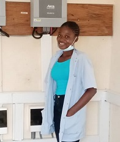

THIS PAGE IS FOR SELF INTRODUCTION, BACKGROUND AND EXPECTATION ON ROBOTICS
Manoudewa is an MSc Electrical Engineering (Telecommunication Option) student of the Pan African University Institute of Basic Sciences, Technology and Innovation (PAUSTI)
Magnoudewa earned her Bachelor degree in Telecommunication Engineering at Ghana Telecom University College (GTUC), Ghana. During the time she completed her Undergraduate project in The Design and Construction of a Portable Medication Reminder.
I would like to learn more about the robotics field, where programmable machines are built that can assist human’s actions and also acts without waiting for human control.